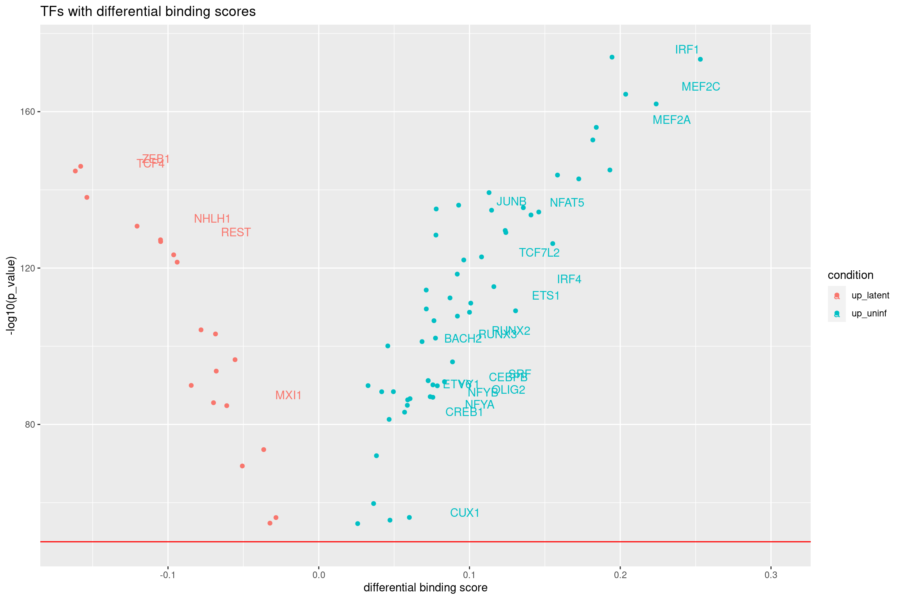
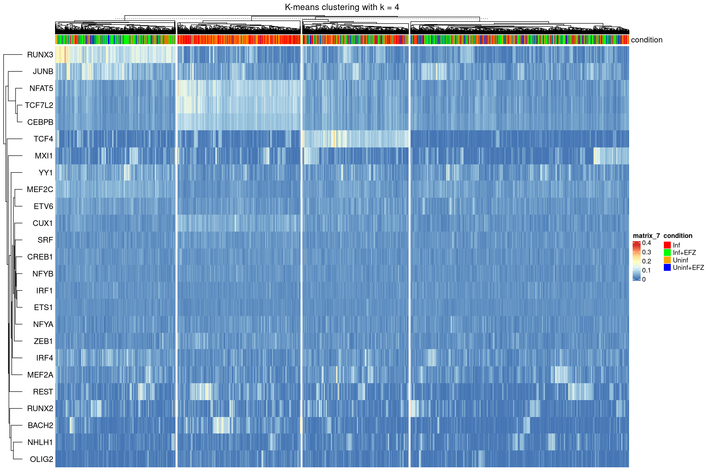
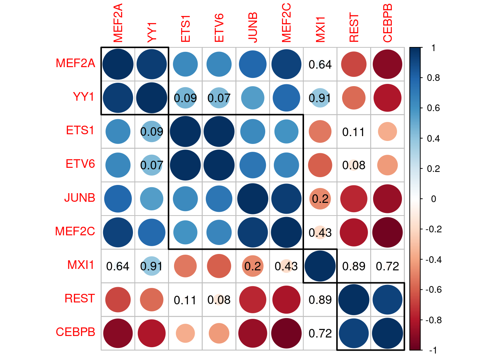

Transcription factor activity in iMg
Katharina Mikulik
Last updated: 2022-01-10
Checks: 7 0
Knit directory: report/
This reproducible R Markdown analysis was created with workflowr (version 1.6.2). The Checks tab describes the reproducibility checks that were applied when the results were created. The Past versions tab lists the development history.
Great! Since the R Markdown file has been committed to the Git repository, you know the exact version of the code that produced these results.
Great job! The global environment was empty. Objects defined in the global environment can affect the analysis in your R Markdown file in unknown ways. For reproduciblity it’s best to always run the code in an empty environment.
The command set.seed(20211203) was run prior to running the code in the R Markdown file. Setting a seed ensures that any results that rely on randomness, e.g. subsampling or permutations, are reproducible.
Great job! Recording the operating system, R version, and package versions is critical for reproducibility.
Nice! There were no cached chunks for this analysis, so you can be confident that you successfully produced the results during this run.
Great job! Using relative paths to the files within your workflowr project makes it easier to run your code on other machines.
Great! You are using Git for version control. Tracking code development and connecting the code version to the results is critical for reproducibility.
The results in this page were generated with repository version 62d16f3. See the Past versions tab to see a history of the changes made to the R Markdown and HTML files.
Note that you need to be careful to ensure that all relevant files for the analysis have been committed to Git prior to generating the results (you can use wflow_publish or wflow_git_commit). workflowr only checks the R Markdown file, but you know if there are other scripts or data files that it depends on. Below is the status of the Git repository when the results were generated:
Ignored files:
Ignored: analysis/Independent_cell_type_identification_Farhadian_dataset_cache/
Ignored: analysis/Triculture_csf_integration_cache/
Untracked files:
Untracked: README.html
Untracked: analysis/Triculture_csf_integration/
Untracked: data/triculture_seurat_object
Untracked: rebuild file.Rmd
Untracked: rebuild-file.Rmd
Untracked: rebuild-file.html
Untracked: rebuild-file_cache/
Untracked: rebuild-file_files/
Note that any generated files, e.g. HTML, png, CSS, etc., are not included in this status report because it is ok for generated content to have uncommitted changes.
These are the previous versions of the repository in which changes were made to the R Markdown (analysis/Triculture_dataset_GRN_with_Scenic.Rmd) and HTML (docs/Triculture_dataset_GRN_with_Scenic.html) files. If you’ve configured a remote Git repository (see ?wflow_git_remote), click on the hyperlinks in the table below to view the files as they were in that past version.
| File | Version | Author | Date | Message |
|---|---|---|---|---|
| Rmd | 62d16f3 | Katharina782 | 2022-01-10 | wflow_publish(all = TRUE, delete_cache = TRUE, republish = TRUE) |
| html | b0b092f | Katharina782 | 2022-01-09 | Build site. |
| Rmd | 12b0e37 | Katharina782 | 2022-01-09 | wflow_publish(all = TRUE, delete_cache = TRUE) |
| html | 12b0e37 | Katharina782 | 2022-01-09 | wflow_publish(all = TRUE, delete_cache = TRUE) |
| html | f35ba45 | Katharina782 | 2021-12-31 | Build site. |
| html | 75af25c | Katharina782 | 2021-12-31 | Build site. |
| Rmd | dfcd540 | Katharina782 | 2021-12-31 | wflow_publish(all = TRUE, republish = TRUE, delete_cache = TRUE) |
| html | d0fdb76 | Katharina782 | 2021-12-30 | Build site. |
| Rmd | cae354b | Katharina782 | 2021-12-30 | wflow_publish(all = TRUE, republish = TRUE, delete_cache = TRUE) |
| html | 8ea0b51 | Katharina782 | 2021-12-28 | Build site. |
| Rmd | 0e99d50 | Katharina782 | 2021-12-28 | wflow_publish(c("analysis/_site.yml“,”analysis/Triculture_dataset_GRN_with_Scenic.Rmd")) |
| Rmd | 95e3d72 | Katharina782 | 2021-12-28 | wflow_publish(“analysis/Triculture_dataset_GRN_with_Scenic.Rmd”) |
| html | 6c5f3b1 | Katharina782 | 2021-12-27 | Build site. |
| html | d85a631 | Katharina782 | 2021-12-22 | Build site. |
| html | 0a10c58 | Katharina782 | 2021-12-21 | Build site. |
| html | bdbb921 | Katharina782 | 2021-12-21 | Build site. |
| Rmd | efc0f94 | Katharina782 | 2021-12-21 | wflow_publish(c(“analysis/TF_activity_analysis_of_myeloid2_cluster.Rmd,” |
| html | 9597c36 | Katharina782 | 2021-12-21 | Build site. |
| Rmd | ea7e899 | Katharina782 | 2021-12-20 | wflow_publish(all = TRUE, republish = TRUE, delete_cache = TRUE) |
| html | 6783264 | Katharina782 | 2021-12-20 | Build site. |
| Rmd | 9e2c322 | Katharina782 | 2021-12-20 | wflow_publish(c(“analysis/Triculture_dataset_GRN_with_Scenic.Rmd,” |
| html | 40651d9 | Katharina782 | 2021-12-20 | Build site. |
| html | 436b5c2 | Katharina782 | 2021-12-20 | Build site. |
| Rmd | f7243f8 | Katharina782 | 2021-12-20 | wflow_publish(all = TRUE, republish = TRUE, delete_cache = TRUE) |
| html | f7243f8 | Katharina782 | 2021-12-20 | wflow_publish(all = TRUE, republish = TRUE, delete_cache = TRUE) |
| html | 8b791e3 | Katharina782 | 2021-12-19 | Build site. |
| html | fce26d5 | Katharina782 | 2021-12-18 | Build site. |
| html | 114a941 | Katharina782 | 2021-12-18 | Build site. |
| html | 9ee3086 | Katharina782 | 2021-12-18 | Build site. |
| Rmd | e87fa96 | Katharina782 | 2021-12-16 | new files |
library(tidyverse)
library(Seurat)
library(edgeR)
library(Matrix)
library(data.table)
library(ggplot2)
library(dplyr)
library(ggrepel)
#library(harmony)
library(RColorBrewer)
library(pheatmap)
library(ggcorrplot)
library(ComplexHeatmap)
library(circlize)
library(ggpubr)
library(gridExtra)
library(corrplot)
library(rstatix)
library(knitr)
library(metap)
library(multtest)
library(readxl)GRN inference with SCENIC
To infer GRNs from iMg cells of the triculture data set (Ryan SK 2020) (4333 cells in total) SCENIC was used as before. When referring to differentially bound TFs in the C20 cell line in the following I am referring to differential binding scores between infection conditions obtained from bulk ATACseq data from C20 cell line cultures using TOBIAS.
First SCENIC was run with 3000 most highly variable genes (HVG), but then only eight of the TFs overlapped with the differentially bound TFs. Using 10,000 HVG SCENIC returned 232 TFS and their corresponding activity scores for each cell. Of these 232 TFs 25 overlap with differentially bound TFs in the C20 cell line.
# read in triculture Seurat object
triculture <- readRDS("/media/ag-cherrmann/kmikulik/HIV_microglia/src/Triculture_dataset_Ryan_paper/triculture_clean_seurat_object")
# read in CSF HIV Seurat object
hiv7 <- readRDS("/media/ag-cherrmann/kmikulik/HIV_microglia/src/Reproduce_Farhadian_Paper/Seurat_objects/total_7_samples_label_transfer.rds")
imicroglia <- subset(triculture, cell_type == "iMg")Preparing expression matrix for SCENIC
First, SCTransform was used for normalization of the expression data, then the top 10,000 HVGs are selected and the matrix transposed, because the pySCENIC pipeline requires an input matrix which has genes as columns and cells as rows. (https://github.com/hdsu-bioquant/pySCENIC_pipeline/blob/master/input/gene_exp_mtx_example.tsv)
# use 10 000 most highly variable genes
scenic <- SCTransform(imicroglia, variable.features.n = 10000, verbose=FALSE)
saveRDS(scenic, "/media/ag-cherrmann/kmikulik/HIV_microglia/src/Triculture_dataset_Ryan_paper/triculture_scenic")
scenic <- readRDS("/media/ag-cherrmann/kmikulik/HIV_microglia/src/Triculture_dataset_Ryan_paper/triculture_scenic")
scenic_hvg <- subset(scenic, features = scenic@assays$SCT@var.features)
scenic_mtx <- t(scenic_hvg@assays$SCT@scale.data)
write.table(x = scenic_mtx, file = "/media/ag-cherrmann/kmikulik/HIV_microglia/src/pySCENIC_pipeline/input/triculture_mtx.tsv", sep = "\t")
#scenic_matrix <- read.table(file = "/media/ag-cherrmann/kmikulik/HIV_microglia/src/pySCENIC_pipeline/input/triculture_mtx.tsv", sep = "\t")AuCell matrix - output from Scenic
The output from SCENIC is a matrix containing cells as rows and 232 TFs as columns. Five exemplary rows and columns are shown below. The TF activity for each cell can be used to draw conclusions about different cell states.
auc_mtx <- read.csv("/media/ag-cherrmann/kmikulik/HIV_microglia/src/Triculture_dataset_Ryan_paper/pySCENIC_output/aucell_img_10k.csv")
auc_mtx <- auc_mtx %>% column_to_rownames("Cell")
auc_mtx <- auc_mtx %>% setnames( old = colnames(auc_mtx), new = sapply(strsplit(
colnames(auc_mtx), "[...]"), `[`, 1))
auc_mtx[1:5, 1:5] %>% kable(caption = "Layout of TF activity matrix")| ARID3A | ARNT | ARNTL2 | ASCL2 | ATF2 | |
|---|---|---|---|---|---|
| ca_AAACCTGGTGTTCGAT-1 | 0.0337910 | 0.0864444 | 0.063000 | 0.0002 | 0.01125 |
| ca_AAACCTGGTTGTACAC-1 | 0.0200299 | 0.0237778 | 0.024625 | 0.0629 | 0.00000 |
| ca_AAACGGGAGAATTCCC-1 | 0.0436418 | 0.0133333 | 0.006375 | 0.0000 | 0.11100 |
| ca_AAACGGGAGACAGACC-1 | 0.0314925 | 0.0000000 | 0.063625 | 0.0804 | 0.00000 |
| ca_AAACGGGTCACATACG-1 | 0.0402687 | 0.0971111 | 0.067625 | 0.0000 | 0.00000 |
Number of iMg in each condition
# add auc matrix to metadata of hiv4 seurat object
tri_mg <- AddMetaData(imicroglia,
metadata = auc_mtx,
col.name = colnames(auc_mtx))tri_mg@meta.data %>%
rename(condition = orig.ident) %>%
group_by(condition) %>%
summarize(n = n()) %>%
kable(caption = "Number of cells in each condition")| condition | n |
|---|---|
| Inf | 1166 |
| Inf+EFZ | 1382 |
| Uninf | 1163 |
| Uninf+EFZ | 722 |
Bulk ATACseq footprinting
The C20 cell line was derived from an HIV+ patient treated with ART (Antiretroviral Therapy). Since the access of ART to the brain is limited due to the blood-brain barrier, the effects of ART on these cells are probably negligible. Only the 75 TFs with p-values for differential binding scores below 1e-50 were used. We will focus on TFs which show differential binding scores between latent infection and uninfected conditions in the C20 cell line. For 25 of these 75 TFs there is a TF activity score for the iMg. Focusing on these 25 TFs we might be able to find activity patterns that correlate with the TF binding scores. Five TFs are more bound in latent infection and twenty TFs are more bound in uninfected cells. The reason why we find more of the TFs more bound in uninfected cells in the TF activity score matrix from SCENIC is unclear.
tfs_ana <- read.table("/media/ag-cherrmann/projects/06_HIV_Microglia/data/atacseq/data-2020-11-06/tobias/TOBIAS_snakemake/footprint_mglia2_GlassTF_17-03/TFBS/bindetect_results.txt", sep = "\t", header = TRUE)
top_tfs <- tfs_ana %>% filter(uninf_red_pvalue < 1e-50)
# keep only the TFs in the dataframe which overlap between the two datasets.
overlap_atac <- top_tfs %>% filter(name %in% colnames(auc_mtx))
# dataframe containing only the 25 Tfs whcih overlap with TF activity matrix from SCENIC
# adding a column with information in which infection condition the TF is more bound
atac_tfs_df <- top_tfs %>% filter(name %in% colnames(auc_mtx)) %>%
mutate(condition = ifelse(uninf_red_change > 0, "up_uninf", "up_latent"))
# List of 5 TFs more bound in latent infection
up_latent <- atac_tfs_df$name[atac_tfs_df$condition == "up_latent"]
# list of 25 TFs more bound in uninfected cells
up_uninf <- atac_tfs_df$name[atac_tfs_df$condition == "up_uninf"]Volcano Plot ATAC-seq footprinting
top_tfs %>%
# add a column containing information in which condition the corresponding TF
# is upregulated
mutate(condition = ifelse(uninf_red_change < 0, "up_latent", "up_uninf")) %>%
# add a column conaining the labels for the plot
# I only want to label cells which are also found by Scenic
mutate(label = ifelse(name %in% overlap_atac$name, name, NA)) %>%
ggplot(aes(x = uninf_red_change,
y = -log10(uninf_red_pvalue),
col = condition,
label = label)) +
geom_point() +
geom_hline(yintercept = -log10(1e-50), col = "red") +
geom_text(nudge_x = .05, nudge_y = 2) +
labs(title = "TFs with differential binding scores") +
ylab("-log10(p_value)") +
xlab("differential binding score")
Warning: Removed 50 rows containing missing values (geom_text).
TF activity in iMg
In the heatmap of TF activities below you can already see a trend towards a separation of cells treated with EFZ (blue and green) from untreated cells (red and orange). It will be interesting to see if an activity pattern resembling the differential binding score pattern from the C20 cell line footprinting can be found. For this we will focus on the 25 TFs which are found in the C20 cell line and the triculture data set respectively.
Heatmap of 232 TFs and their activity in iMg
conditions <- tri_mg@meta.data %>%
rownames_to_column("cell") %>%
select("cell", "orig.ident")%>% column_to_rownames("cell")
ht <- Heatmap(t(auc_mtx),
col = colorRampPalette(rev(brewer.pal(n = 7, name = "RdYlBu")))(100),
show_column_names = FALSE,
row_names_side = "left",
top_annotation = HeatmapAnnotation(condition = conditions$orig.ident,
name = "condition", col =
list(condition = c("Uninf" = "orange",
"Inf+EFZ" = "green",
"Inf" = "red",
"Uninf+EFZ" = "blue")))
)
ht
K-means clustering with different k
Using k-means clustering we might be able to identify clusters with certain patterns of TF activity. Judging from the different heatmaps shown belo, k = 4 might be the most informative, since for k = 5 there is only one TF (NHLH1) differentiating an additional cluster. The plot of within-clusters sum of squares should help to pick the best number of clusters, however as can be seen below there is no obvious kink in the curve.
K-means clustering with k = 2 seems to split the cells into treated vs. untreated cells. These two clusters have a very evident biological meaning. Using k = 3 or k = 4 keeps these two biologically relevant groups separate, but also creates additional clusters which seem to be a mixture of treated and untreated cells. Having a closer look at clusters from k = 4 might give som additional biological insights.
Having a closer look at the four clusters, it becomes evident that the two left most clusters separate treated cells from untreated cells, independent of the infection condition. There are more Inf+EFZ than Uninf+EFZ in the first cluster, however this is in line with the lower cell number of Uninf+EFZ (722 cells) compared to Inf+EFZ (1382 cells).
Two TFs seem to be more active in Inf+EFZ and Uninf+EFZ compared to Inf and Uninf, namely RUNX3 and JUNB. Another three TFs seem to be more active in Inf and Uninf compared to Inf+EFZ and Uninf+EFZ, namely NFAT5, TCF7L2 and CEBPB. TCF4 distinguishes a third cluster. Is there a biological meaning behind that? Can these TFs be associated with a particular condition?
Different k
ht_list <- map(seq.int(2,6), function(n){
ht <- Heatmap(t(auc_mtx[, atac_tfs_df$name]),
col = colorRampPalette(rev(brewer.pal(n = 7, name = "RdYlBu")))(100),
column_title = paste0("k = ", n),
show_column_names = FALSE,
row_names_side = "left",
top_annotation = HeatmapAnnotation(condition = conditions$orig.ident,
name = "condition",
col = list(condition =
c("Uninf" = "orange",
"Inf+EFZ" = "green",
"Inf" = "red",
"Uninf+EFZ" = "blue"))),
column_km = n,
)
})
ht_list <- ht_list[[1]] + ht_list[[2]] + ht_list[[3]] + ht_list[[4]] + ht_list[[5]]
draw(ht_list, column_title = "K-means clustering with different k", ht_gap = unit(2, "cm"))
k = 4
ht <- draw(Heatmap(t(auc_mtx[, atac_tfs_df$name]),
col = colorRampPalette(rev(brewer.pal(n = 7, name = "RdYlBu")))(100),
column_title = "K-means clustering with k = 4",
show_column_names = FALSE,
row_names_side = "left",
top_annotation = HeatmapAnnotation(condition = conditions$orig.ident,
name = "condition",
col = list(condition =
c("Uninf" = "orange",
"Inf+EFZ" = "green",
"Inf" = "red",
"Uninf+EFZ" = "blue"))),
column_km = 4,
))
WSS plot
df <- hiv7@meta.data %>% filter(cell_type == "Myeloid2",
orig.ident == "HIV1_CSF")
mtx <- auc_mtx[, atac_tfs_df$name]
# Decide on a k for clustering
wss = sapply(2:15, function(k) {
kmeans(x = t(mtx), centers = k)$tot.withinss
})
plot(2:15, wss, type = "b",
xlab = "Number of clusters k",
ylab = "Total within-clusters sum of square")
Split heatmaps to find patterns
Separate Heatmaps according to infection condition
Separating the cells according to different conditions shows that there is a bigger difference between cells treated with EFZ vs. untreated cells than between infected vs uninfected cells. The Inf+EFZ (green) and Uninf+EFZ (blue) show very similar TF activity patterns and the Inf (red) and Uninf (orange) show very similar TF activity patterns. These findings recapitulate the findings from above.
Two TFs seem to be more active in Inf+EFZ and Uninf+EFZ compared to Inf and Uninf, namely RUNX3 and JUNB. Three TFs seem to be more active in Inf and Uninf compared to Inf+EFZ and Uninf+EFZ, namely NFAT5, TCF7L2 and CEBPB. In microglia cells inflammatory signals trigger NFAT5 expression (Yang XL 2018). CEBPB regulates pro-inflammatory gene expression and its expression is increased in the brain during HAND, however, there is no data from microglia cells (Canchi S 2020).
ht_conditions <- Heatmap(t(auc_mtx[, atac_tfs_df$name]),
#col = colorRampPalette(rev(brewer.pal(n = 7, name = "RdYlBu")))(100),
column_title = "split according to infection condition",
show_column_names = FALSE,
row_names_side = "left",
col = colorRampPalette(rev(brewer.pal(n = 7, name = "RdYlBu")))(100),
top_annotation = HeatmapAnnotation(condition = conditions$orig.ident,
name = "condition", col = list(condition = c("Uninf" = "orange", "Inf+EFZ" = "green", "Inf" = "red", "Uninf+EFZ" = "blue"))),
#row_km = 2,
#row_split = atac_tfs_df$condition,
column_split = tri_mg$orig.ident,
left_annotation = rowAnnotation(TF_footprinting = (atac_tfs_df %>%
select(name, condition) %>%
column_to_rownames("name"))[["condition"]],
name = "TF_footprinting",
col = list(TF_footprinting = c("up_latent" = "pink",
"up_uninf" = "darkgreen")))
)
ht_conditions 
Split Heatmaps according to TF binding scores from ATACseq data
Separating the heatmap along the rows, according to TFs either more bound in latently infected microglia or more bound in uninfected primary microglia, does not result in a separation according to treatment with EFZ.
What one might expect to see, is that TFs more bound in uninfected primary microglia would also show higher activity in uninfected iMg, while TFs more bound in latently infected primary microglia would show higher activity in Inf+EFZ iMg. However, such a pattern is not immediately visible in the heatmap below.
The TFs more bound in latently infected cells do not seem to correlate with any condition, but rather vary a lot more across all cells than the TFs more bound in uninfected cells which show some correlation with the condition and less across all cells.
ht_tfs1 <- Heatmap(t(auc_mtx[, atac_tfs_df$name]),
#col = colorRampPalette(rev(brewer.pal(n = 7, name = "RdYlBu")))(100),
column_title = "split according to TF binding score for latent vs. uninfected",
show_column_names = FALSE,
row_names_side = "left",
#column_km = 4,
row_split = atac_tfs_df$condition,
col = colorRampPalette(rev(brewer.pal(n = 7, name = "RdYlBu")))(100),
top_annotation = HeatmapAnnotation(condition = conditions$orig.ident,
name = "condition",
col = list(condition =
c("Uninf" = "orange",
"Inf+EFZ" = "green",
"Inf" = "red",
"Uninf+EFZ" = "blue"))),
#column_split = tri_mg$orig.ident
left_annotation = rowAnnotation(TF_footprinting =
(atac_tfs_df %>%
select(name, condition) %>%
column_to_rownames("name"))[["condition"]],
name = "TF_footprinting",
col = list(TF_footprinting = c("up_latent" = "pink",
"up_uninf" = "darkgreen")))
)
#ht_list <- ht_conditions + ht_tfs
#draw(ht_list)ht_tfs2 <- Heatmap(t(auc_mtx[, atac_tfs_df$name]),
#col = colorRampPalette(rev(brewer.pal(n = 7, name = "RdYlBu")))(100),
column_title = "split according to TF binding score for latent vs. uninfected",
show_column_names = FALSE,
row_names_side = "left",
#column_km = 4,
row_split = atac_tfs_df$condition,
column_split = tri_mg@meta.data$orig.ident,
col = colorRampPalette(rev(brewer.pal(n = 7, name = "RdYlBu")))(100),
top_annotation = HeatmapAnnotation(condition = conditions$orig.ident,
name = "condition", col =
list(condition =
c("Uninf" = "orange",
"Inf+EFZ" = "green",
"Inf" = "red",
"Uninf+EFZ" = "blue"))),
#column_split = tri_mg$orig.ident
left_annotation = rowAnnotation(TF_footprinting =
(atac_tfs_df %>%
select(name, condition) %>%
column_to_rownames("name"))[["condition"]],
name = "TF_footprinting",
col = list(TF_footprinting = c("up_latent" = "pink",
"up_uninf" = "darkgreen")))
)ht_list <- ht_tfs1 + ht_tfs2
draw(ht_list, ht_gap = unit(2, "cm"))
TF activity differences between clusters
To quantitatively investigate whether we can find TFs which have significantly different activity between clusters we can use Kruskal-Wallis test and pairwise wilcox test as a posthoc analysis. 206 TFs have different acivity between the clusters.
p_values <- map(seq.int(1:length(colnames(auc_mtx))), function(n){
tf <- colnames(auc_mtx)[n]
#print(tf)
#print(triculture@meta.data[tf])
p_values <- unlist(kruskal.test(pull(tri_mg@meta.data[tf]) ~ orig.ident,
tri_mg@meta.data))["p.value"]
#print(p_values)
#list(tf = tf, p_value = p_values)
})
# adjust for multiple hypothesis testing
adj_p_values <- p.adjust(as.numeric(unname(unlist(p_values))), method = "fdr")
# how many transcription factors are significantly different between the clusters?
#length(adj_p_values[adj_p_values<0.01])Posthoc analysis
more bound in latent infection
Boxplots of TFs activity across conditions of TFs more bound in latent infection
Among the TFs more bound in latently infected cells there is a difference in activity for REST and ZEB1, but only between treatment conditions and not between infection conditions. For the other three TFs there are no differences or patterns.
boxplot_list <- map(up_latent, function(tf) {
ggplot() +
geom_boxplot(aes(x = tri_mg@meta.data %>% pull("orig.ident"),
y = tri_mg@meta.data %>% pull(tf),
fill = tri_mg@meta.data %>% pull("orig.ident"))) +
stat_pvalue_manual(tri_mg@meta.data %>%
pairwise_wilcox_test(as.formula(paste0(tf, " ~ orig.ident"))) %>%
add_xy_position()) +
xlab("Condition") +
ylab(paste0(tf)) +
guides(fill = guide_legend(title = "condition"))
})
do.call(gridExtra::grid.arrange, c(boxplot_list, ncol = 3, nrow = 2))
more bound in uninfected
Boxplots of TFs activity across conditions of TFs more bound in uninfected primary microglia
In the plots below the trend of TF activity being negatively correlated between treated and untreated cells, independently of the infection status can be seen for some TFs, for example CEBPB and MEF2C. For other TFs there is no difference between either infection status or treatment, for example CREB1 and ETS1.
Yet, even though the effect of treatment is most prominent, some TFs are additionally following the pattern of the footprinting. For example, RUNX3, CUX1, MEF2A, YY1 and MEF2C are more active in uninfected cells than in infected cells, but more active in infected + EFZ cells than uninfected + EFZ cells. These TFs, therefore, follow the footprining pattern at least in the untreated conditon. Conversely, NFAT5, TCF7L2 and CEBPB are more active in infected than in uninfected cells, but more bound in uninfected + EFZ cells than in infected + EFZ cells. It is unclear why the patterns are contrary to each other between the treatment conditions. JUNB and NFYB are the only two TFs which are more bound in uninfected +/- EFZ compared to infected +/- EFZ, which means they are following the footprinting pattern independently of the treatment condition.
One assumption is that TFs which are markers of microglia cells might be more or less active depending on whether the cells were treated with EFZ or not. An argument against this assumption is that both CEBPB and MEF2C are typically expressed in microglia, yet we observe an opposite trend. CEBPB is more active in Inf and Uninf cells than in Inf+EFZ and Uninf+EFZ cells, while MEF2C is more active in Inf+EFZ and Uninf+EFZ cells than in Inf and Uninf cells.
boxplot_list <- map(up_uninf, function(tf) {
ggplot() +
geom_boxplot(aes(x = tri_mg@meta.data %>% pull("orig.ident"),
y = tri_mg@meta.data %>% pull(tf),
fill = tri_mg@meta.data %>% pull("orig.ident"))) +
stat_pvalue_manual(tri_mg@meta.data %>%
pairwise_wilcox_test(as.formula(paste0(tf, " ~ orig.ident"))) %>%
add_xy_position()) +
xlab("Condition") +
ylab(paste0(tf)) +
guides(fill = guide_legend(title = "condition"))
})
do.call(gridExtra::grid.arrange, c(boxplot_list, ncol = 5, nrow = 4))
#annotate_figure(figure,
# top = text_grob("TFs activity across conditions for TFs more bound in uninfected primary microglia", size = 20))Correlations between conditions
The correlation plot and scatter matrix below further emphasizes what has already become evident from the previous analysis. Inf and Uninf iMg show a higher correlation with each other than for example Uninf+EFZ and Uninf. The Inf+EFZ iMg hardly correlate with the Inf iMg, but show a higher correlation with the Uninf+EFZ. The effect of EFZ treatment seems to be stronger than the effect of the infection.
Correlation matrix
cor_mtx <- tri_mg@meta.data %>%
rownames_to_column("cell") %>%
select(c("cell", "orig.ident", colnames(auc_mtx))) %>%
group_by(orig.ident) %>%
summarize_if(is.numeric, mean) %>%
gather(TF, value, -orig.ident) %>%
spread(orig.ident, value) %>%
column_to_rownames("TF") %>% cor()
testCor <- cor.mtest(cor_mtx, conf.level = 0.95)
# plot correlations
# p.mat = matrix of p_values
corrplot(cor_mtx,
#method = "color",
order = "hclust",
addrect = 4, # add boxes
p.mat = testCor$p,
#sig.level = .05,
insig = "p-value",
tl.col = "black")
Scatter matrix
tri_mg@meta.data %>%
rownames_to_column("cell") %>%
select(c("cell", "orig.ident", colnames(auc_mtx))) %>%
group_by(orig.ident) %>%
summarize_if(is.numeric, mean) %>%
gather(TF, value, -orig.ident) %>%
spread(orig.ident, value) %>%
column_to_rownames("TF") %>% GGally::ggpairs() +
labs(title = "Scatter matrix for different conditions")
Correlation between TFs differentiating Myeloid2 clusters
These TFs were differentially active between the three k-means clusters in Myeloid2 cells from HIV-infected patients. Across three different patients they showed correlated changes in activity. YY1, ETS1 and REST were positively correlated with each other and negatively correlated with MEF2A, ETV6, JUNB, MEF2C, MXI1 and CEBPB. The pattern observed for the iMg from the triculture data set does not resemble the pattern observed in Myeloid2 cells. A suprising observation is that there is pairs of TFs which are highly correlated, for example ETS1 and ETV6 or REST and CEBPB.
Correlation Matrix
intersect_csf <- read.table("/media/ag-cherrmann/kmikulik/HIV_microglia/data/atac_intersect_TFs_different_across_patients_3_clusters")
cor_mtx <- tri_mg@meta.data %>%
rownames_to_column("cell") %>%
select(c("cell", "orig.ident", intersect_csf$x[intersect_csf$x %in% colnames(auc_mtx)])) %>% # only TFs with differential binding scores from ATACseq
group_by(orig.ident) %>%
summarize_if(is.numeric, mean) %>%
column_to_rownames("orig.ident") %>% cor()
testCor <- cor.mtest(cor_mtx, conf.level = 0.95)
corrplot(cor_mtx,
#method = "color",
order = "hclust",
addrect = 4, # add boxes
p.mat = testCor$p,
insig = "p-value")
Scatter Matrix
tri_mg@meta.data %>%
rownames_to_column("cell") %>%
select(c("cell", "orig.ident", intersect_csf$x[intersect_csf$x %in% colnames(auc_mtx)])) %>% # only TFs with differential binding scores from ATACseq
group_by(orig.ident) %>%
summarize_if(is.numeric, mean) %>%
column_to_rownames("orig.ident") %>%
GGally::ggpairs() +
labs(title = "Scatter Matrix for different TFs")
Conclusions
GRN inference based on gene expression in iMg did not show very clear results. 25 of the TFs were also found to have differential binding scores in the C20 cell line, but the patterns in activity were not always consistent. Some TFs more bound in uninfected cells followed the pattern found by footprinting, but only for either the treated cells or the untreated cells, but not for both. For the five TFs more bound in latent infection in C20 cells, no pattern was observed. Also, the correlation in activity of the tree TFs YY1, ETS1 and REST, found in Myeloid2 cells, was not found in iMg which weakens the hypothesis that the cluster of interest found in Myeloid2 cells might be latently infected cells. The interpretation of the results is difficult due to the fact that the effect of EFZ treatment seems to overshadow any effect of the HIV infection. This strong effect of the drugs should be kept in mind in any further analysis, since it makes the comparison between cells from patients and from cell culture particularly hard. Drug concentrations in the blood and even more so in the CSF are very low and the direct application of drugs in cell culture might not resemble the physiological effect very well.
References
sessionInfo()
R version 4.0.2 (2020-06-22)
Platform: x86_64-pc-linux-gnu (64-bit)
Running under: CentOS Linux 7 (Core)
Matrix products: default
BLAS/LAPACK: /usr/lib64/libopenblasp-r0.3.3.so
locale:
[1] LC_CTYPE=en_US.UTF-8 LC_NUMERIC=C
[3] LC_TIME=en_US.UTF-8 LC_COLLATE=en_US.UTF-8
[5] LC_MONETARY=en_US.UTF-8 LC_MESSAGES=en_US.UTF-8
[7] LC_PAPER=en_US.UTF-8 LC_NAME=C
[9] LC_ADDRESS=C LC_TELEPHONE=C
[11] LC_MEASUREMENT=en_US.UTF-8 LC_IDENTIFICATION=C
attached base packages:
[1] parallel grid stats graphics grDevices utils datasets
[8] methods base
other attached packages:
[1] readxl_1.3.1 multtest_2.46.0 Biobase_2.50.0
[4] BiocGenerics_0.36.1 metap_1.6 knitr_1.30
[7] rstatix_0.6.0 corrplot_0.92 gridExtra_2.3
[10] ggpubr_0.4.0 circlize_0.4.13 ComplexHeatmap_2.9.4
[13] ggcorrplot_0.1.3 pheatmap_1.0.12 RColorBrewer_1.1-2
[16] ggrepel_0.9.1 data.table_1.14.2 Matrix_1.3-4
[19] edgeR_3.32.0 limma_3.46.0 SeuratObject_4.0.3
[22] Seurat_4.0.5 forcats_0.5.0 stringr_1.4.0
[25] dplyr_1.0.7 purrr_0.3.4 readr_1.4.0
[28] tidyr_1.1.2 tibble_3.1.6 ggplot2_3.3.5
[31] tidyverse_1.3.0 workflowr_1.6.2
loaded via a namespace (and not attached):
[1] utf8_1.2.2 reticulate_1.22 tidyselect_1.1.1
[4] htmlwidgets_1.5.4 Rtsne_0.15 munsell_0.5.0
[7] mutoss_0.1-12 codetools_0.2-18 ica_1.0-2
[10] future_1.23.0 miniUI_0.1.1.1 withr_2.4.3
[13] colorspace_2.0-2 highr_0.8 rstudioapi_0.13
[16] stats4_4.0.2 ROCR_1.0-11 ggsignif_0.6.0
[19] tensor_1.5 listenv_0.8.0 labeling_0.4.2
[22] Rdpack_2.1.2 git2r_0.27.1 mnormt_2.0.2
[25] polyclip_1.10-0 farver_2.1.0 rprojroot_2.0.2
[28] TH.data_1.0-10 parallelly_1.29.0 vctrs_0.3.8
[31] generics_0.1.1 xfun_0.29 R6_2.5.1
[34] doParallel_1.0.16 clue_0.3-60 locfit_1.5-9.4
[37] reshape_0.8.8 spatstat.utils_2.2-0 assertthat_0.2.1
[40] promises_1.2.0.1 scales_1.1.1 multcomp_1.4-15
[43] gtable_0.3.0 globals_0.14.0 goftest_1.2-3
[46] sandwich_3.0-0 rlang_0.4.12 GlobalOptions_0.1.2
[49] splines_4.0.2 lazyeval_0.2.2 spatstat.geom_2.3-0
[52] broom_0.7.2 yaml_2.2.1 reshape2_1.4.4
[55] abind_1.4-5 modelr_0.1.8 backports_1.2.0
[58] httpuv_1.6.3 tools_4.0.2 ellipsis_0.3.2
[61] spatstat.core_2.3-1 ggridges_0.5.2 TFisher_0.2.0
[64] Rcpp_1.0.7 plyr_1.8.6 rpart_4.1-15
[67] deldir_1.0-6 pbapply_1.5-0 GetoptLong_1.0.5
[70] cowplot_1.1.1 S4Vectors_0.28.1 zoo_1.8-9
[73] haven_2.3.1 cluster_2.1.0 fs_1.5.1
[76] magrittr_2.0.1 magick_2.5.2 scattermore_0.7
[79] openxlsx_4.2.3 lmtest_0.9-39 reprex_0.3.0
[82] RANN_2.6.1 tmvnsim_1.0-2 mvtnorm_1.1-1
[85] whisker_0.4 fitdistrplus_1.1-6 matrixStats_0.61.0
[88] hms_1.1.1 patchwork_1.1.1 mime_0.12
[91] evaluate_0.14 xtable_1.8-4 rio_0.5.16
[94] IRanges_2.24.1 shape_1.4.6 compiler_4.0.2
[97] KernSmooth_2.23-18 crayon_1.4.2 htmltools_0.5.2
[100] mgcv_1.8-33 later_1.3.0 lubridate_1.7.9.2
[103] DBI_1.1.1 dbplyr_2.0.0 MASS_7.3-53
[106] car_3.0-10 cli_3.1.0 rbibutils_2.2.4
[109] igraph_1.2.9 pkgconfig_2.0.3 sn_2.0.1
[112] numDeriv_2016.8-1.1 foreign_0.8-80 plotly_4.9.2.1
[115] spatstat.sparse_2.0-0 xml2_1.3.2 foreach_1.5.1
[118] rvest_0.3.6 digest_0.6.29 sctransform_0.3.2
[121] RcppAnnoy_0.0.19 spatstat.data_2.1-0 rmarkdown_2.6
[124] cellranger_1.1.0 leiden_0.3.5 uwot_0.1.10
[127] curl_4.3.2 shiny_1.7.1 rjson_0.2.20
[130] lifecycle_1.0.1 nlme_3.1-150 jsonlite_1.7.2
[133] carData_3.0-4 viridisLite_0.4.0 fansi_0.5.0
[136] pillar_1.6.4 GGally_2.0.0 lattice_0.20-41
[139] plotrix_3.8-2 fastmap_1.1.0 httr_1.4.2
[142] survival_3.2-7 glue_1.6.0 zip_2.1.1
[145] png_0.1-7 iterators_1.0.13 stringi_1.7.6
[148] mathjaxr_1.4-0 irlba_2.3.3 future.apply_1.8.1